La forma de un avión queda escrita en el aire.
Simulamos el flujo supersónico alrededor de dos geometrías, generamos sus imágenes Schlieren y medimos hasta qué nivel de ruido se puede reconocer la forma.
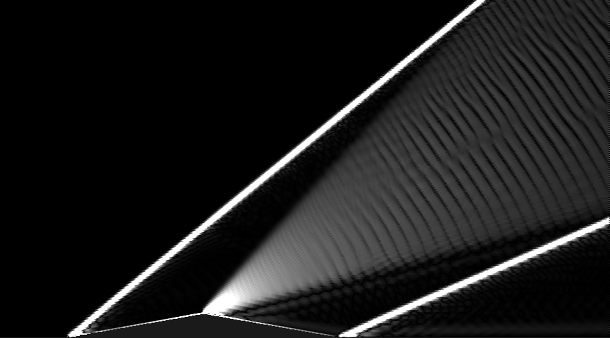
Universidad Distrital Francisco José de Caldas, Bogotá
III CEINNA, Bogotá, 13 y 14 de octubre de 2026
Un avión furtivo puede esconderse del radar. No puede esconder su onda de choque.
La tecnología furtiva reduce la huella de radar de aeronaves como el F-22 o el F-35 hasta hacerlas muy difíciles de detectar.
Pero actúa sobre un solo canal físico. Un cuerpo que vuela más rápido que el sonido comprime el aire a su paso, y esa perturbación depende de su forma.
¿Cuánta información sobre la forma lleva la onda de choque, y cuánto ruido soporta antes de perderse?
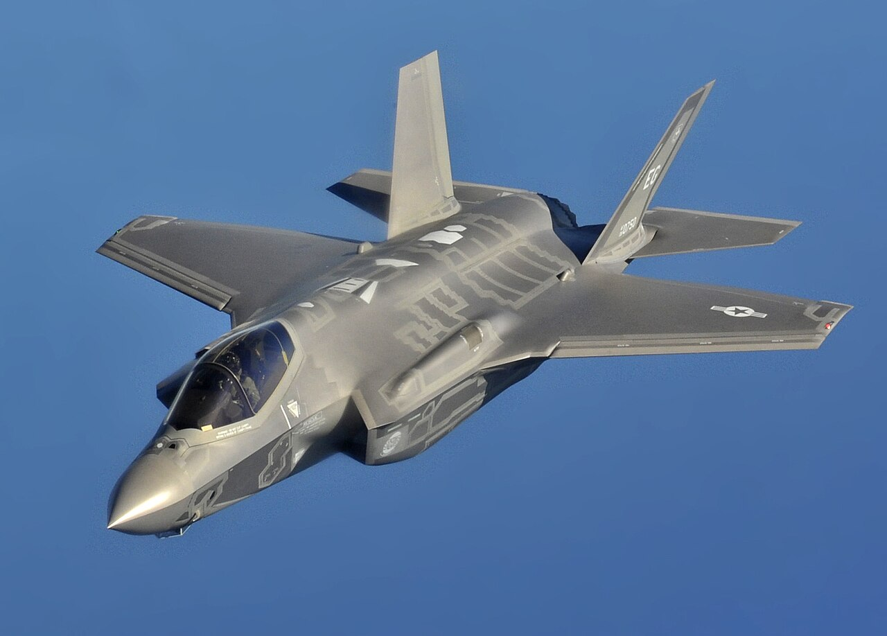
Ver lo invisible, desde 1864.
El aire es transparente, pero un cambio de densidad desvía la luz. Esa idea sencilla lleva más de siglo y medio mostrando lo que el vuelo le hace al aire.
-
1864
August Toepler inventa la fotografía Schlieren.
Una cuchilla colocada en el foco de un sistema óptico corta parte de la luz desviada. Las pequeñas variaciones de densidad del aire aparecen entonces como luz y sombra.
-
1887
Ernst Mach fotografía la onda de choque de una bala.
Junto con Peter Salcher publica las primeras imágenes de un proyectil más rápido que el sonido. La razón entre la velocidad de un cuerpo y la del sonido lleva hoy su nombre.
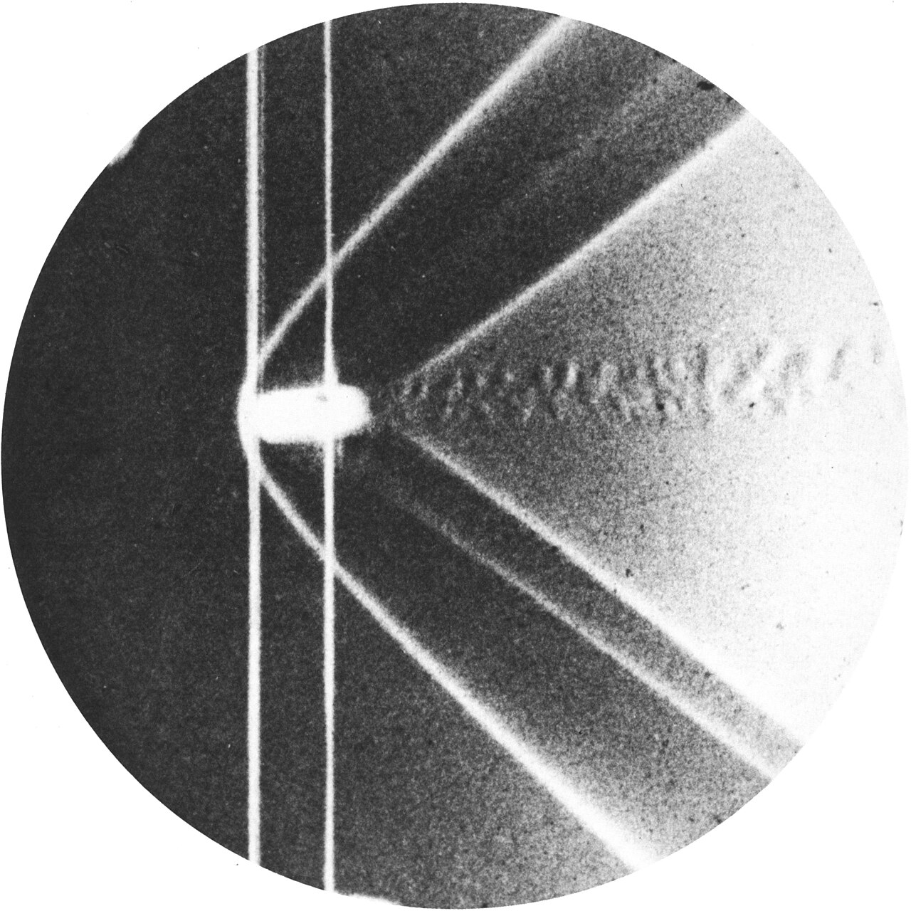
Ernst Mach, 1888. Dominio público, vía Wikimedia Commons. -
1947
El Bell X-1 rompe la barrera del sonido.
El 14 de octubre se convierte en el primer avión tripulado en superar la velocidad del sonido. Las ondas de choque pasan de los laboratorios a la aviación.
Bell X-1. Fuerza Aérea de EE. UU., dominio público, vía Wikimedia Commons. -
Hoy
NASA fotografía las ondas de choque en pleno vuelo.
El Schlieren orientado al fondo usa el paisaje o el cielo como fondo de referencia y deja ver las ondas de choque de un avión real a velocidad supersónica.
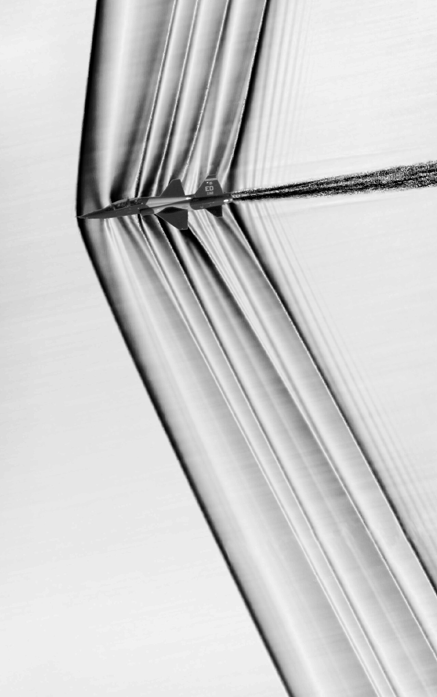
T-38C en vuelo supersónico, Schlieren orientado al fondo. NASA, dominio público, vía Wikimedia Commons. -
2026
Este trabajo.
Cuantificamos cuánta información sobre la forma del cuerpo sobrevive en la imagen de su onda de choque cuando la observación se degrada.
De la ecuación a la imagen.
Cada paso se comprobó contra la teoría antes de pasar al siguiente.
-
Dos geometrías con solución exacta
Una cuña produce un solo choque oblicuo. Un rombo produce además un abanico de expansión y un choque de recompresión. Las dos tienen solución analítica, así que cada simulación se puede verificar.
-
54 simulaciones de flujo supersónico
Ecuaciones de Euler compresibles resueltas con volúmenes finitos en OpenFOAM, para números de Mach de 1,6 a 2,4 y semiángulos de 8°, 10° y 12°.
-
Schlieren sintético
Del campo de densidad se calcula el gradiente vertical y se simula una cuchilla horizontal. Lo oscuro es compresión; lo claro, expansión.
-
Degradación controlada
Desenfoque óptico, pérdida de contraste y ruido de sensor, en niveles crecientes y con varias realizaciones de ruido por nivel.
-
Tres clasificadores
Una referencia que mira solo los píxeles más brillantes, una regresión logística con cinco medidas físicas y una red convolucional que ve la imagen completa. Siempre se evalúan con casos que no vieron al entrenar.
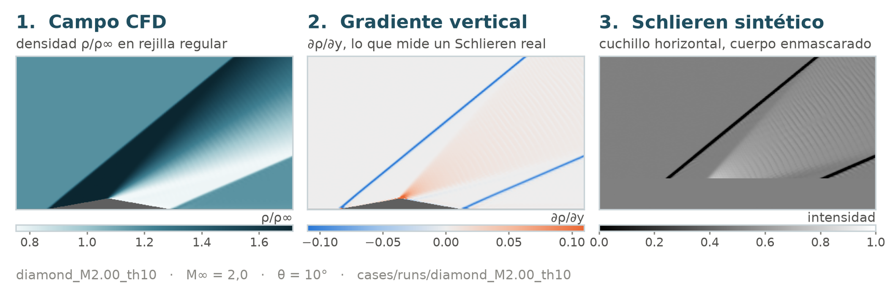
Sube el ruido.
La misma cuña y el mismo rombo, con la misma realización de ruido. Mueve el control y observa cuándo dejas de ver la diferencia, y cuándo dejan de verla los clasificadores.
Exactitud con validación cruzada por caso. Con dos clases, 50 % es adivinar al azar; la línea marca el 75 % que usamos como umbral.
Antes de clasificar, comprobamos la física.
Una imagen solo sirve si conserva lo que la teoría predice. Por eso cada paso tiene una prueba con solución exacta.
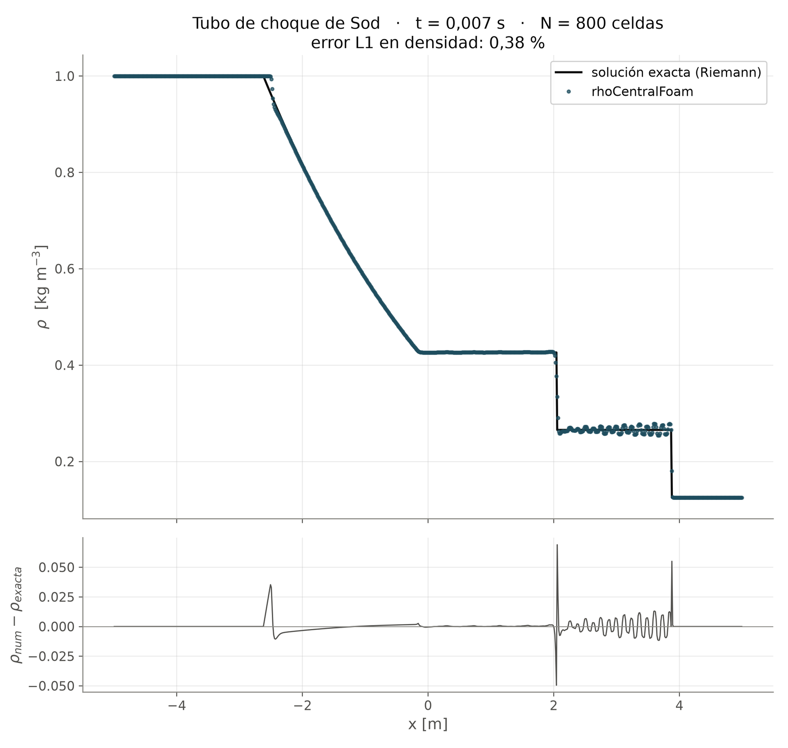
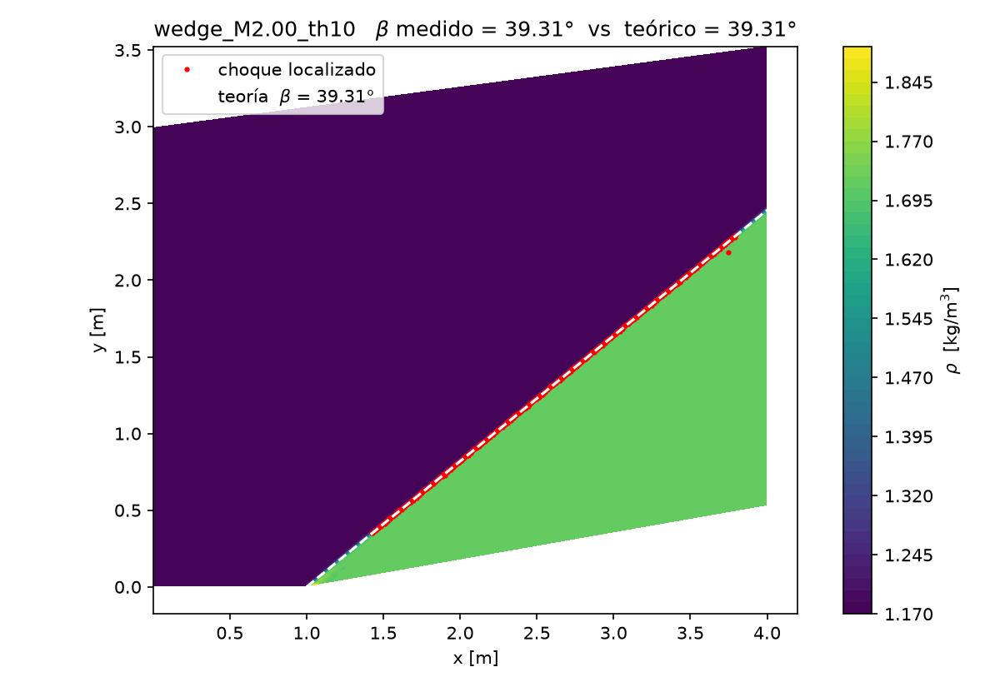
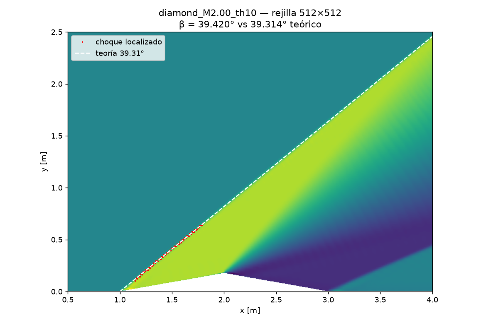
4,2dB
Hasta ahí se reconoce la forma.
A simple vista, la estructura deja de distinguirse entre 15 y 20 dB. Los rasgos físicos y la red convolucional siguen reconociendo la geometría hasta 4,2 y 4,3 dB. La referencia deja de funcionar antes, a 10,7 dB, porque el ruido satura la imagen.
10,7 dB
y CNN4,2 y 4,3 dB
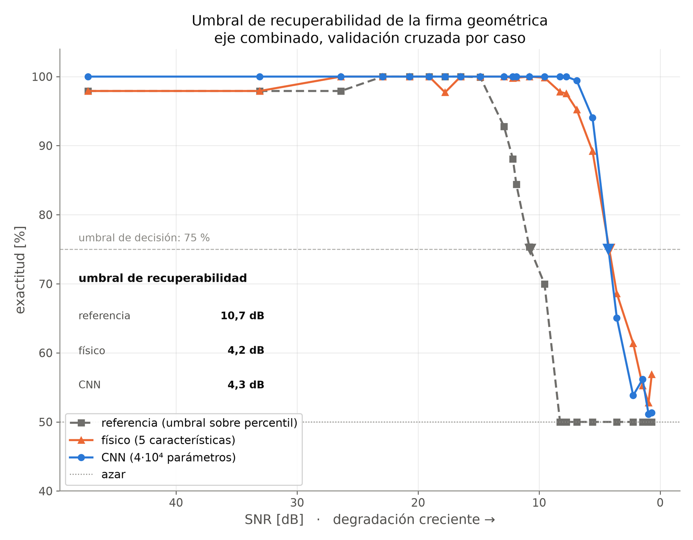
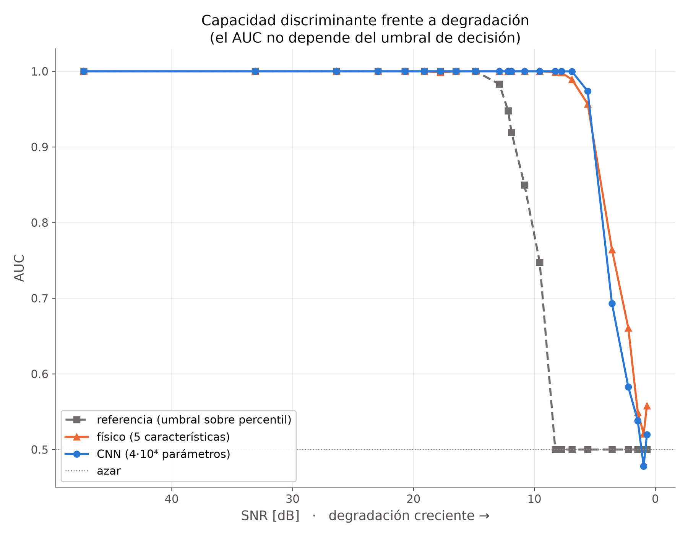
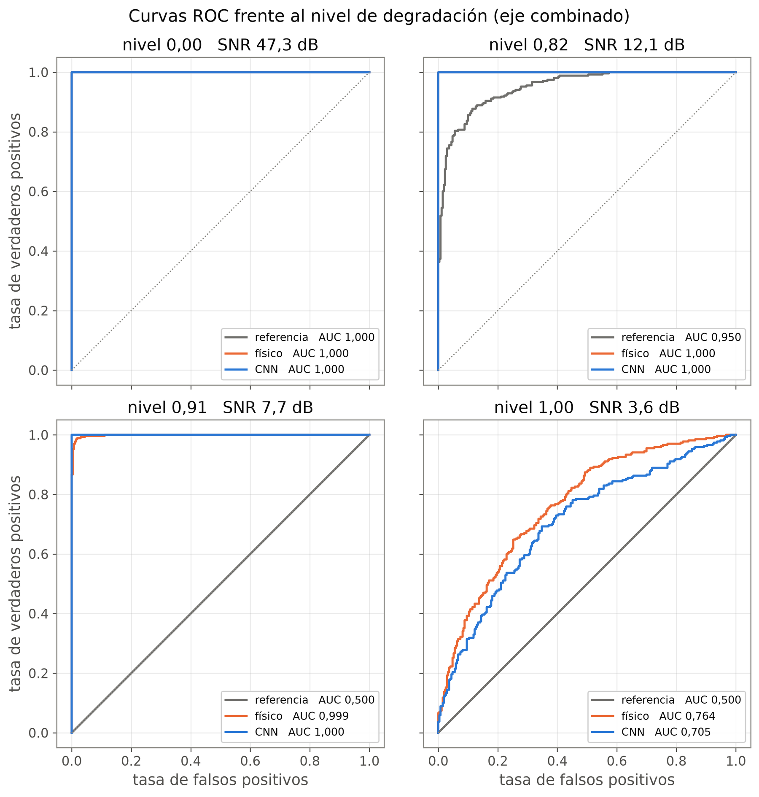
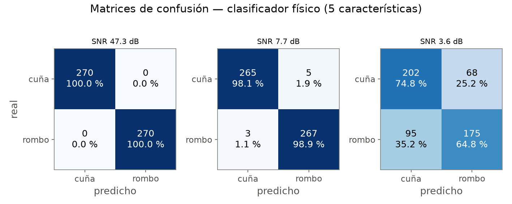
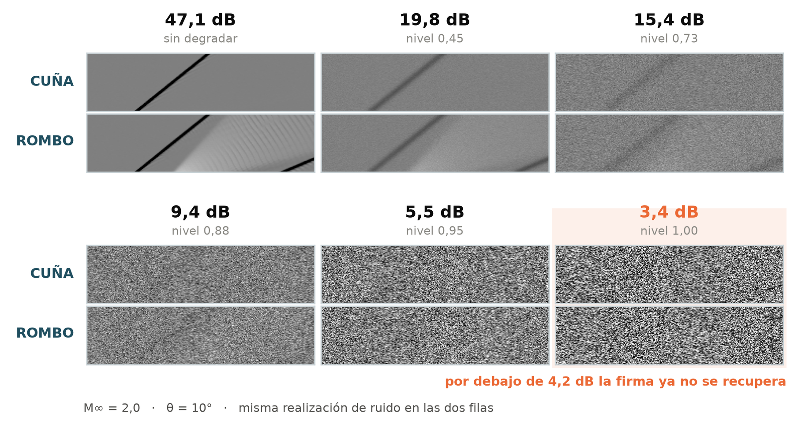
Qué separa una forma de otra.
La forma está en el abanico, no en el ángulo.
El ángulo del choque de proa depende solo del número de Mach y de la deflexión, así que es el mismo en la cuña y en el rombo. Lo que los distingue es el abanico de expansión, que solo existe en el rombo.
Por eso las dos medidas que más pesan son la asimetría del brillo y el área clara: ambas responden a la zona de expansión.
- 56 %Asimetría del histograma de brillo
- 41 %Área clara (expansión)
- 3 %Contraste, transiciones por columna y rectas detectadas, juntas
Peso de cada medida en la decisión de la regresión logística.

Cinco números bastan.
La red convolucional tiene que descubrir sola qué mirar en la imagen. La regresión logística recibe solo cinco medidas que la física dice que importan.
Las dos llegan prácticamente al mismo umbral con unas siete mil veces menos parámetros: la información que separa las geometrías es física y cabe en cinco números.
Parámetros ajustados por cada modelo, en escala logarítmica.
Cómo sabemos que no es un artefacto.
La geometría deja una firma física que se recupera hasta unos 4 dB de relación señal‑ruido. Muy por debajo del punto en que deja de verse a simple vista.
Cinco medidas físicas interpretables rinden igual que una red neuronal de 40 718 parámetros. En este problema no hace falta una caja negra para extraer la información.
Límites: el Schlieren es sintético, la simulación es bidimensional y sin viscosidad, y solo se compararon dos geometrías. El siguiente paso es validar el umbral con imágenes Schlieren experimentales.
Referencias
- K. Zikidis, A. Skondras, C. Tokas. Journal of Computations and Modelling 4 (2014) 129-165.
- J.D. Anderson. Modern Compressible Flow with Historical Perspective. 3ra ed., McGraw-Hill, New York, 2003, p. 126-148.
- G. Gori, A. Guardone. Applied Mathematics and Computation 319 (2018) 647-661.
- G.S. Settles. Schlieren and Shadowgraph Techniques. Springer, Berlin, 2001, p. 25-38.
- J.P. Molnar, L. Venkatakrishnan, B.E. Schmidt, et al. Experiments in Fluids 64 (2023) 14.
- H.G. Weller, G. Tabor, H. Jasak, C. Fureby. Computers in Physics 12 (1998) 620-631.
- A. Kurganov, E. Tadmor. Journal of Computational Physics 160 (2000) 241-282.
- C.J. Greenshields, H.G. Weller, L. Gasparini, J.M. Reese. International Journal for Numerical Methods in Fluids 63 (2010) 1-21.
- B. van Leer. Journal of Computational Physics 14 (1974) 361-370.
- P.L. Roe. Annual Review of Fluid Mechanics 18 (1986) 337-365.
- G.A. Sod. Journal of Computational Physics 27 (1978) 1-31.
- E.F. Toro. Riemann Solvers and Numerical Methods for Fluid Dynamics. 3ra ed., Springer, Berlin, 2009.
- R.O. Duda, P.E. Hart. Communications of the ACM 15 (1972) 11-15.
- J.A. Hanley, B.J. McNeil. Radiology 143 (1982) 29-36.
- T. Fawcett. Pattern Recognition Letters 27 (2006) 861-874.
- S. Kaufman, S. Rosset, C. Perlich, O. Stitelman. ACM Transactions on Knowledge Discovery from Data 6 (2012) 15.
- F. Pedregosa, G. Varoquaux, A. Gramfort, et al. Journal of Machine Learning Research 12 (2011) 2825-2830.
- A. Paszke, S. Gross, F. Massa, et al. Advances in Neural Information Processing Systems 32 (2019) 8024-8035.